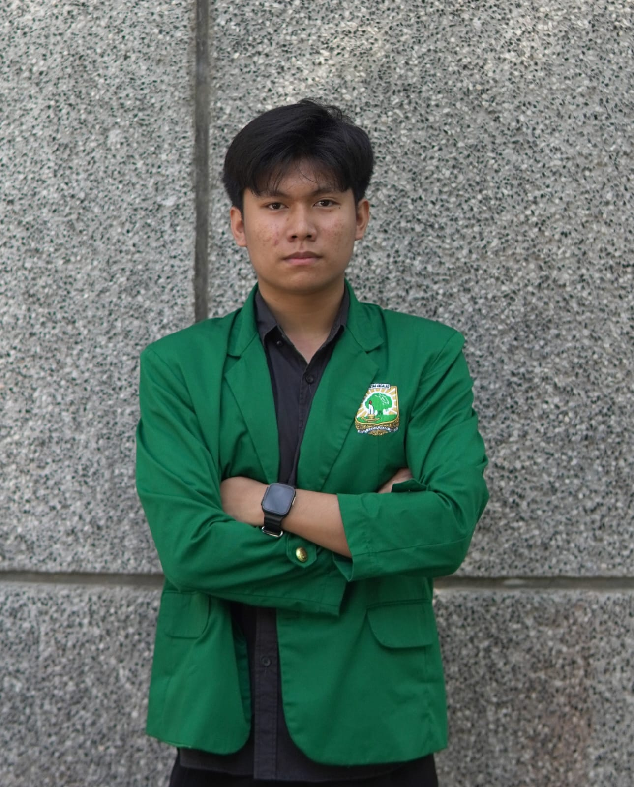

Hai, saya Renaldi Alwean Saputra. Mahasiswa Informatika yang memiliki passion tinggi dalam membangun aplikasi web yang responsif dan user-friendly. Saya berfokus pada pengembangan Front-End yang estetis namun tetap memperhatikan logika Back-End yang kuat.
Saat ini saya juga sedang mendalami Artificial Intelligencedan Unity Sebagai minat saya dalam dunia AI dan Pengembangan Game.
Sedang mendalami Pengembangan Game dan Desain web serta meningkatkan pengetahuan seputar AI.
Menjadi siswa pada jurusan IPA pada pendidikan SMA dan ikut serta OSN Informatika sebanyak 2 kali dan beberapa lomba terkait Digital
Menjadi siswa Madrasah pada tingkat SMP dan Menjadi bagian dari OSIS
Sering mengikuti lomba Cerdas cermat, Olimpiade Matematika, Tahfidz pada saat menjadi siswa sekolah dasar